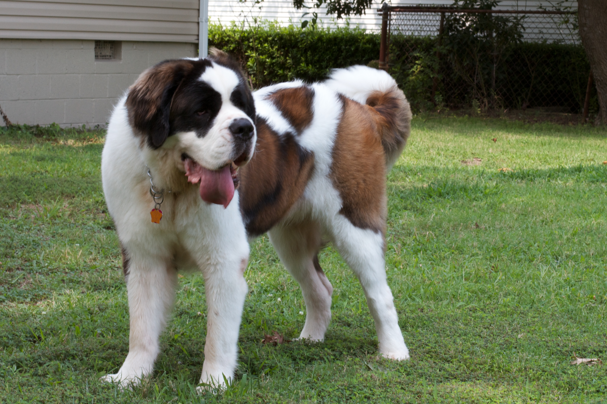
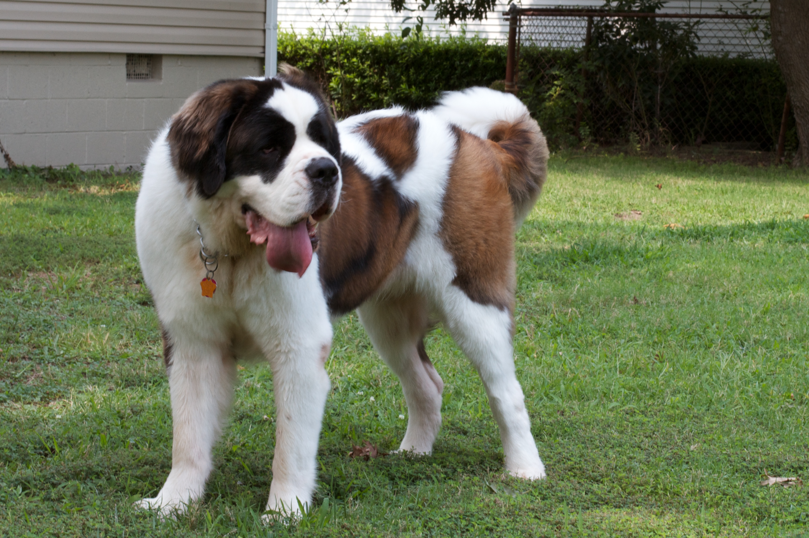

Nature
Saint Bernards are extremely gentle, friendly and very tolerant of children. They are slow moving, patient, obedient, extremely loyal, eager and willing to please.

Saint Bernards are extremely gentle, friendly and very tolerant of children. They are slow moving, patient, obedient, extremely loyal, eager and willing to please.

The Saint Bernard is a good watchdog. Even its size is a good deterrent. They drool after they drink or eat. Be sure you remain the dog's pack leader. Dogs want nothing more than to know what is expected of them and the St Bernard is no exception.

Be sure to socialize this breed very well at a young age with people and other animals. It is highly intelligent and easy to train; however, training should begin early, while the dog is still a manageable size. Teach this dog not to jump on humans starting at puppyhood. Bear in mind that an unruly dog of this size presents a problem for even a strong adult.

They are prone to many health conditions: